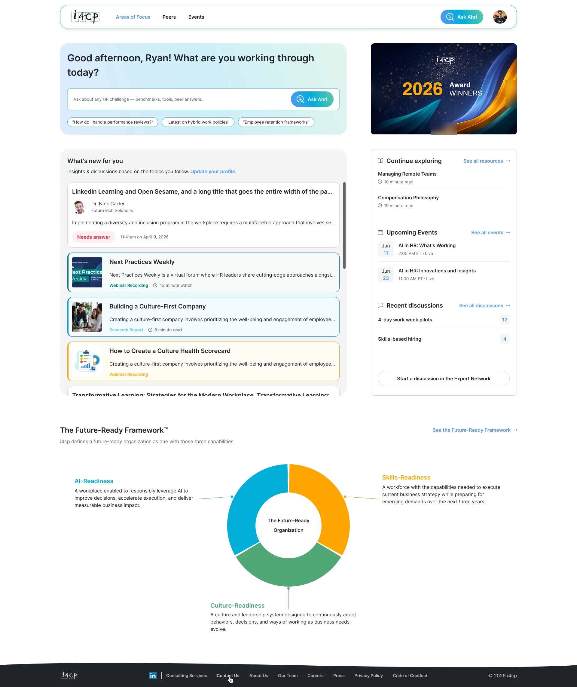
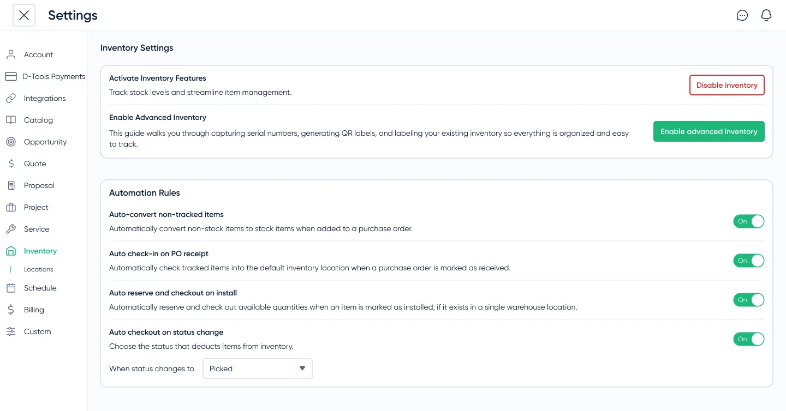

+71% Beta Engagement
AI-Powered BI Dashboards & Opportunity Signals
Redesigned static reporting into role-based executive views with anchored AI summaries grounded in verifiable KPIs, driving 62% multi-dashboard adoption.
Senior product designer & UX engineer with 6+ years designing B2B SaaS platforms and AI workflows that ship.
Complex B2B platforms and AI workflows shipped with verifiable business outcomes.
Redesigned static reporting into role-based executive views with anchored AI summaries grounded in verifiable KPIs, driving 62% multi-dashboard adoption.

Restructured enterprise HR research taxonomy and introduced a unified AI discovery omnibar with grounded citations, lifting feature activation by +500%.

Connected purchase orders directly to warehouse bins and active field jobs, eliminating spreadsheet reconciliations and cutting audit cycles by 60%.

Designed and built in semantic HTML, tokenized CSS, and vanilla ES6 with a grounded project search assistant, ⌘K command palette, and 100/100 Lighthouse performance.